Быстрый старт в Я.Трекере для бизнес-аналитика
Четыре статьи, которые доводят нового бизнес-аналитика до первой поставленной задачи за 15 минут.
- ~15 минут на прохождение
- 4 шага
Четыре статьи, которые доводят нового бизнес-аналитика до первой поставленной задачи за 15 минут.
Разработать стартовую документацию Я.Трекера под ролевую модель «Бизнес-аналитик».
Пользователем данной документации является опытный бизнес-аналитик, который впервые сталкивается с Я.Трекером. Для быстрого старта в работе ему требуется минимально необходимый набор знаний, необходимый для решения рабочих задач.
При проектировании стартового раздела рассматривались два принципа организации материала:
Для стартового раздела выбран комбинированный подход: в основу положен ключевой рабочий сценарий пользователя, а остальные статьи раскрывают функциональность, необходимую для его выполнения.
Для изучения целевой аудитории был проанализирован типовой рабочий процесс бизнес-аналитика. В общих чертах круг его задач выглядит так:
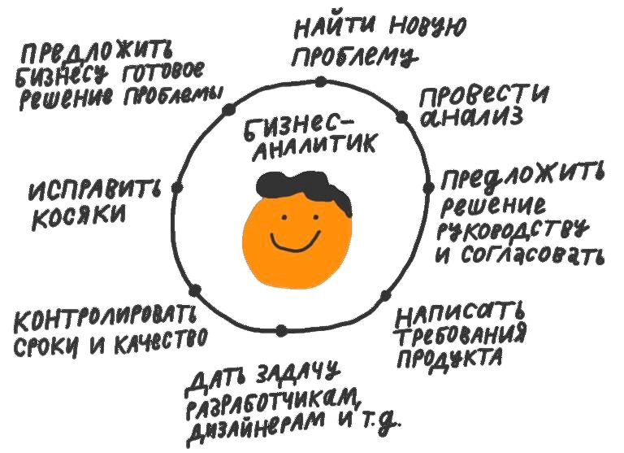
По результатам анализа были сформулированы два ключевых вопроса, определяющих содержание стартового раздела.
Зачем бизнес-аналитику Я.Трекер?
Оформить и сопровождать требование заказчика в виде задачи.
Какой функционал Я.Трекера необходим для решения этой задачи?
Ответ на второй вопрос лёг в основу структуры стартового раздела.
Цель: понять основные понятия и устройство системы.
Ключевые подтемы
Чтобы задача попала в контекст нужной команды и получила правильный префикс (например, LK-101), её необходимо создавать внутри соответствующей очереди.
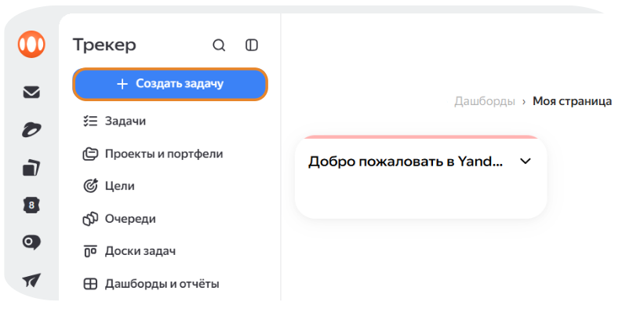
LK: Личный кабинет.
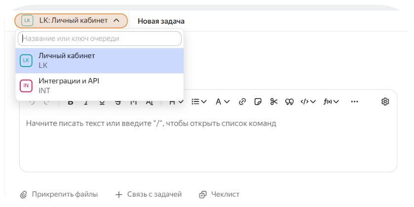
Укажите понятное название темы и внесите структурированное описание требования с помощью визуального редактора.
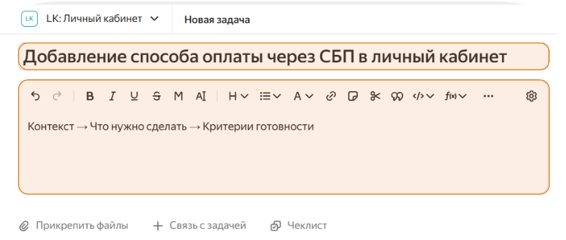
Совет по оформлению: Используйте визуальный редактор Трекера (панель инструментов над текстом) для форматирования списков, выделения заголовков и вставки ссылок.
Чек-лист позволяет аналитику разбить верхнеуровневую задачу на подшаги, контролировать промежуточный прогресс и назначать ответственных на конкретные микрозадачи.
+ Чеклист.
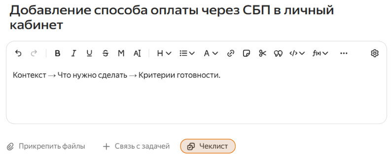
Enter после каждого.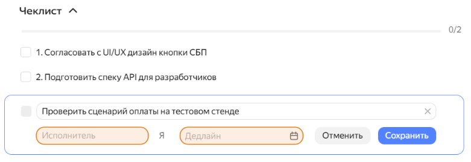
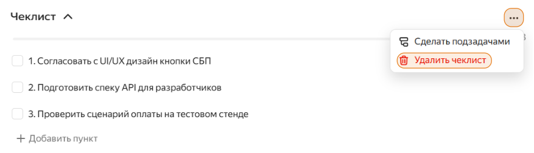
Параметры задачи на правой панели определяют приоритеты, сроки и ответственных лиц.
Задача (или Требование).= Средний (или Высокий, если фича критична для ближайшего релиза).Назначить меня (Я).Добавить меня или выбрав коллег из списка. Они будут получать уведомления обо всех изменениях по задаче.После заполнения всех атрибутов нажмите синюю кнопку «Создать задачу» внизу экрана.
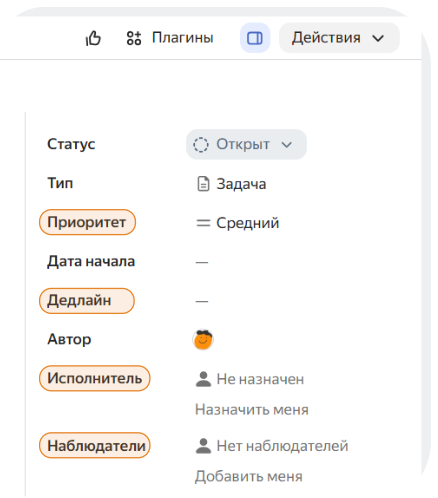
После создания задачи вся рабочая переписка, вопросы тестирования и согласования должны происходить внутри карточки задачи в блоке «Комментарии». Это создает единый информационный контур и сохраняет историю решений.
@ Призвать под полем ввода и выберите из списка разработчика или техлида. Пользователь получит прямое уведомление и задача отобразится у него в фильтре «Ждут ответа».Прикрепить файл (или перетащите файл прямо в окно ввода).
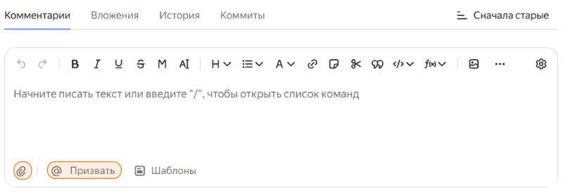
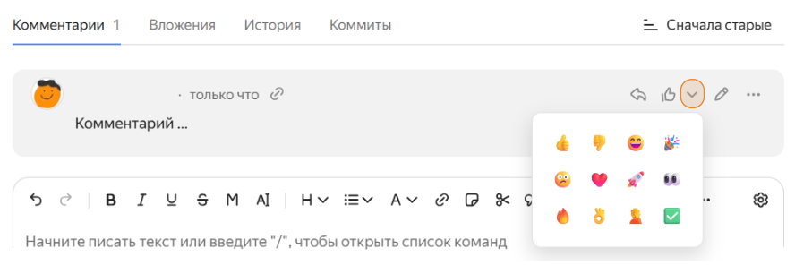
По мере продвижения аналитик обновляет статус задачи на правой панели управления. Статус адресован команде: по нему коллеги понимают, чего от задачи ждать, не открывая переписку.
Открыт — исходное состояние при создании задачи.В работе — работа над требованием началась: проектирование, согласование или передача в разработку.Решен / Закрыт — требование реализовано, протестировано и задеплоено.Если задача создана по ошибке или планы изменились, её не удаляют, а закрывают — так в очереди остаётся история решений. Переведите задачу в статус Закрыть и выберите Резолюцию: это поле обязательное.
Отменено — задача создана ошибочно или функциональность отменили.Дубликат — аналогичная задача уже есть в очереди.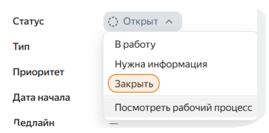
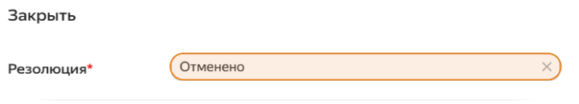
А если задачу нужно именно удалить? Такая возможность есть, но найти её непросто: в меню действий на карточке задачи пункта удаления нет, и поиск обычно заходит в тупик именно здесь. Удаление доступно через ⟨указать путь⟩.
Пользоваться им стоит только для явного мусора — например, задачи, созданной по ошибке в две минуты жизни. Во всех остальных случаях закрытие с резолюцией предпочтительнее: удалённую задачу нельзя восстановить, а вместе с ней исчезают комментарии, вложения и решения, на которые могли ссылаться другие задачи.
На этом сквозной сценарий закончен. Требование зафиксировано в задаче, оформлено так, что его можно выполнить без расспросов, передано в работу, обсуждено в комментариях и закрыто с понятной резолюцией. Вся история решений осталась в карточке — к ней можно вернуться и через полгода.
Цель: быстро находить любую задачу и контролировать работу команды.
Ключевые подтемы
Цель: сократить количество рутинных действий.
Ключевые подтемы